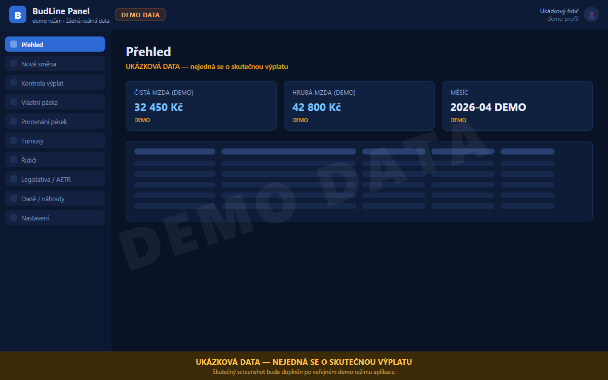
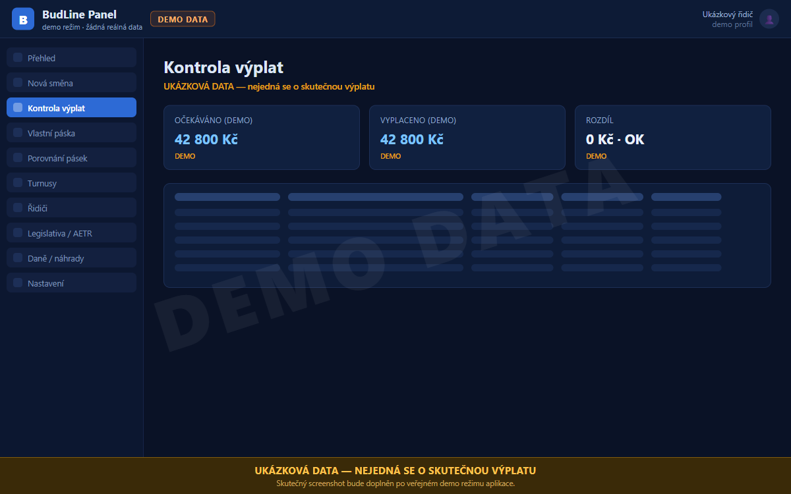
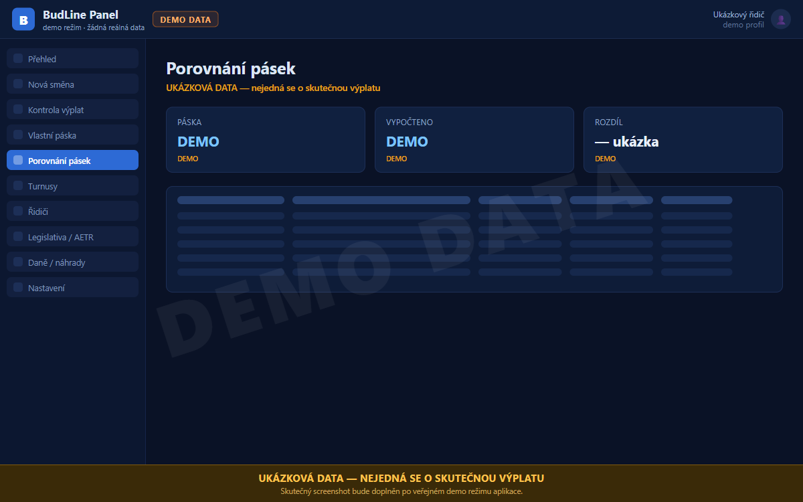
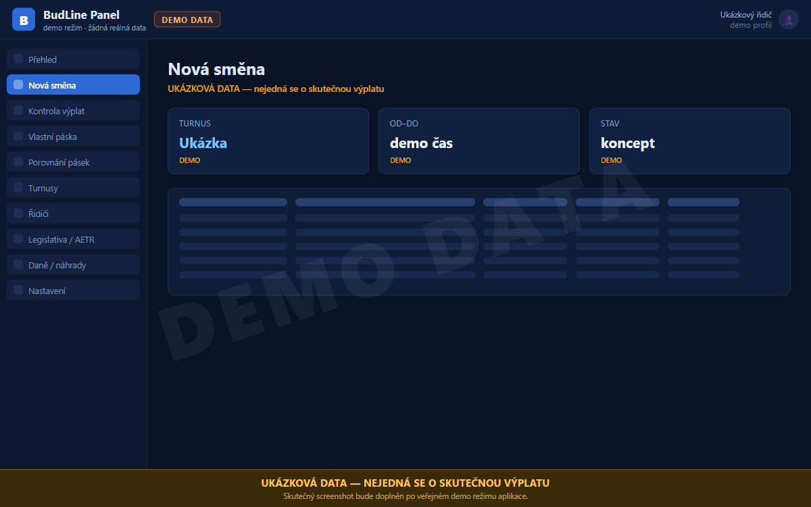
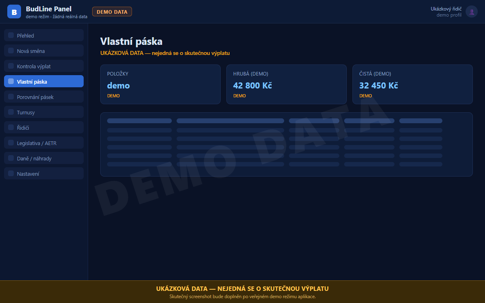
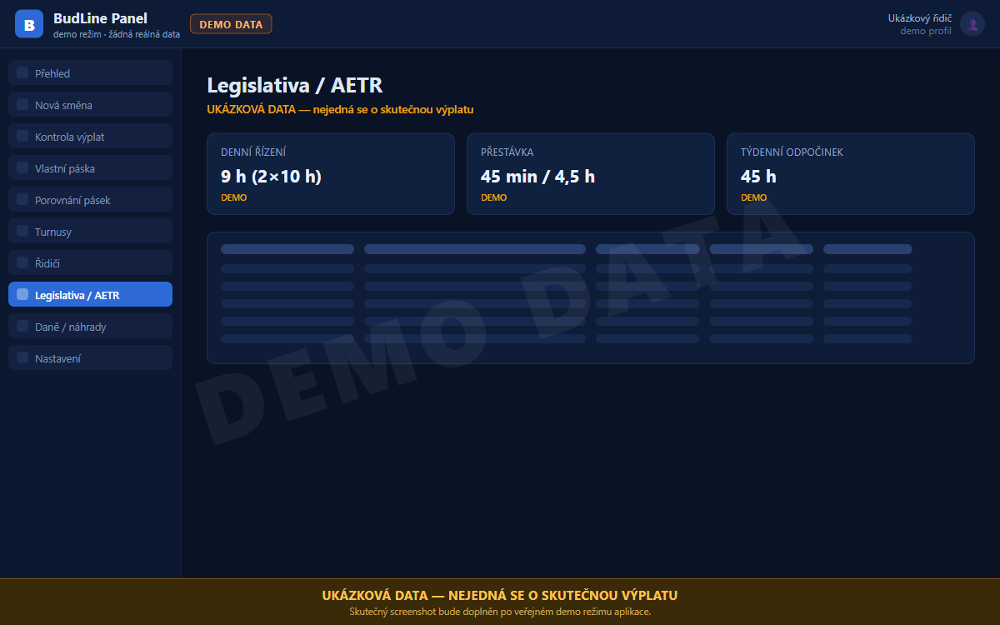
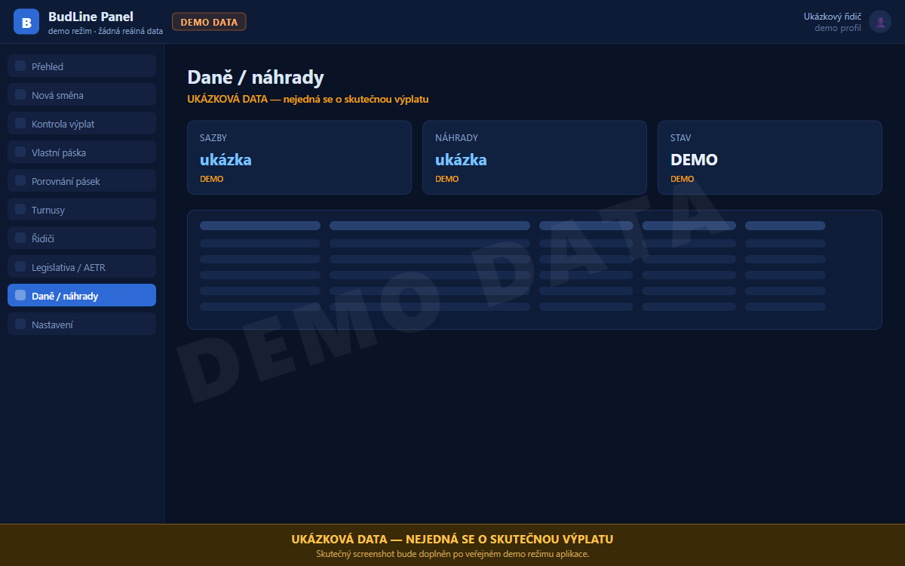
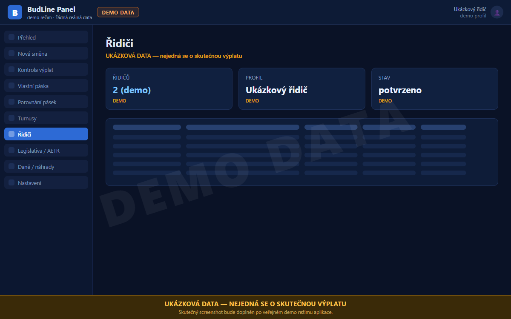
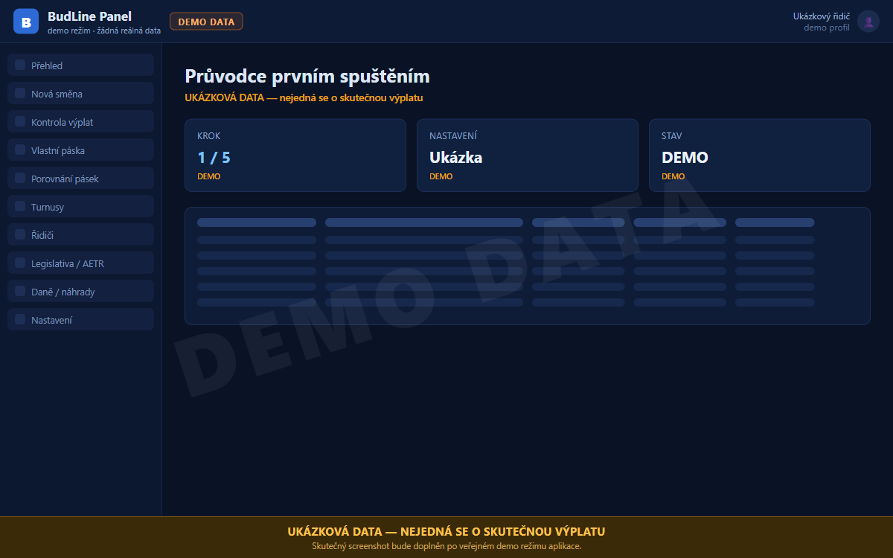
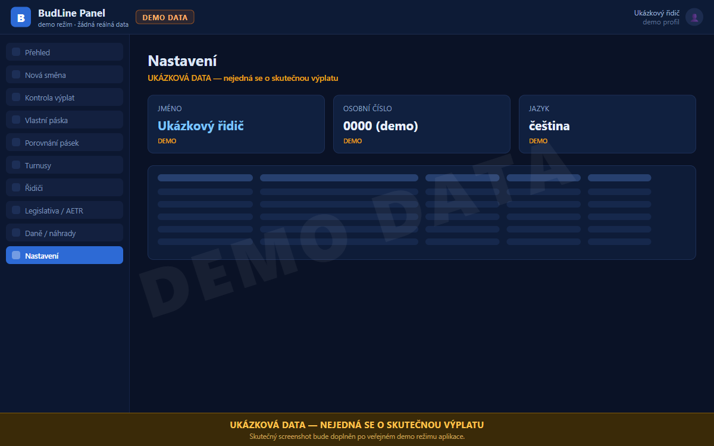

🚌Práce řidiče — turnusy a mzdy
Pracovní aplikace pro řidiče autobusu — automatické zpracování turnusů (rozpisů směn) a výpočet měsíční mzdy podle skutečně odjetých hodin, příplatků a kategorií. Ve vývoji.
Python Excel / XLSX parser PDF parser (turnusy) Lokální Windows app
Co to dělá
Proč vzniká: každý měsíc dostávám rozpis turnusů (kdy a kde mám jet) a výplatní pásku. Ručně si počítám jestli sedí hodiny, příplatky za noční, víkend, svátky, příplatky za přesčas, stravenky. Excel tabulka by stačila, ale chci to mít automatické — nahraju PDF turnusu, aplikace mi vyplivne kolik to vyjde a kde se případně rozchází s výplatou.
Co bude umět: načte PDF rozpis turnusů od regionálního dopravce (parsuje jednotlivé směny — kdy začátek, kdy konec, který spoj), spočítá pracovní hodiny + přestávky + příplatky (noční 22-6, víkend, svátky, přesčas přes základní úvazek). Pak importuje výplatní pásku (XLSX/PDF) a porovná: aplikace řekne „za tento měsíc očekávám X Kč hrubého“, páska říká Y Kč — pokud se to liší, vyhodí seznam položek na ověření s mistrem.
Stav: Ve vývoji. Plán Phase 1 = PDF parser turnusů, Phase 2 = mzdová kalkulačka, Phase 3 = porovnání s výplatou, Phase 4 = UI dashboard. Bez cloudu, bez účtu — všechno lokálně.
Klíčové funkce
- Import PDF turnusu — Načte měsíční rozpis směn z PDF od regionálního dopravce, rozparsuje jednotlivé spoje, časy a místa.
- Výpočet hodin a příplatků — Pracovní hodiny + přestávky + noční (22-6) + víkend + svátky + přesčas přes základní úvazek.
- Porovnání s výplatou — Import výplatní pásky a křížová kontrola: očekávané vs reálné Kč hrubého. Rozdíly vyhodí jako seznam k ověření.
- Měsíční přehled — Kolik odjeto hodin, kolik příplatků, kolik stravenek, kolik dovolené zbývá.
- Lokální, bez cloudu — Žádný účet, žádné API. Výplata a turnusy zůstávají u mě v PC.
Náhledy (ukázková data)
⚠️ Všechny náhledy ukazují demo data — žádná skutečná výplata, směny ani osobní údaje. Skutečné screenshoty budou doplněny po veřejném demo režimu aplikace.










Stav
Ve vývoji. Phase 1 (PDF parser) skeleton, Phase 2-4 plánované. Žádné public hosting plánované — privátní pomůcka pro vlastní mzdové sebekontrolu.